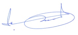

Reçu dons aux oeuvres 2017
(Article 200-5 du Code Général des Impôts)
N° d'ordre reçu : P63/2016
Nom : M et Mme CREUZILLET
Adresse : 135 boulevard du Maréchal Kappa, 75001, CHATEAUNEUF SUR CHER
VAINCRE L'AUTISME reconnaît avoir reçu au titre des versements ouvrant droit à une réduction d'impôts, la somme de : 150€
Mode de versement : CHEQUE - Data : 17/10/2015
Ce reçu fiscal vous permet de déduire de vos impôts 66% du montant de vos dons et cotisations dans la limite de 20% de votre revenu imposable

M'Hammed SAJIDI
Président
Merci pour votre soutien à VAINCRE L'AUTISME